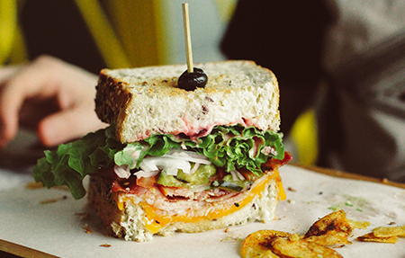

Calentar el horno a 150º. Forrar un molde cuadrado con papel vegetal.
Fundir chocolate al baño maría. Añadir mantequilla a trocitos y dejar que se derrita. Mezclar con espátula para obtener una masa lisa.
Batir huevos con azúcar hasta que la mezcla quede blanquecina.
Verter chocolate fundido sin dejar de remover.
Añadir harina tamizada, almendras, especies y mezclar. Verter la masa en el molde y cocer en el horno 20 min.
Salsa:
Calentar 100 ml (1/2 vaso) de agua hasta hervir. Retirar del fuego y añadir chocolate troceado y canela. Cuando está fundido remover con una espátula hasta obtener una salsa lisa. Servir los brownies tibios partidos en cuadrados y acompañados de salsa de chocolate a la canela.
Sandwich de Salami
24 de Junio 2018

Ingredientes
1 bollo de pan para sándwich, partido
1 cucharada de mayonesa KRAFT Real Mayo Mayonnaise
1/4 cucharadita de sazón italiana
3 rebanadas de salami duro OSCAR MAYER Hard Salami
1 rebanada de queso provolone KRAFT Provolone Cheese Slice
1/4 de una cebolla pequeña, rebanada
1/4 de un pimiento morrón pequeño, rebanado
Elaboración
Unta las dos caras del pan con mayonesa; espolvoréalas con sazón italiano.
Rellena el bollo con capas de salami, queso, cebolla y pimiento morrón.